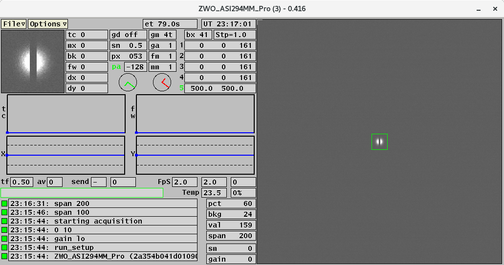

ZWO-Gcam Software Documentation
The Observatories of the Carnegie Institution for Science
(Carnegie Observatories), Pasadena, CA
Christoph C. Birk (birk AT carnegiescience DOT edu)

Location of this document:
http://instrumentation.obs.carnegiescience.edu/Software/ZWO/zwogcam.html
News
Screen Shots and Software Documentation
HowTo setup the RaspberryPi and
NUC
Zwo-Server
News

v0.423 (2024-05-10)
- Introduced the new image mode "-m5" (2520x2520) for use as the
MagE slitviewer.
- Please note that the parameter of the
"-m" switch has changed:
- -m2: 1000x1000
- -m3: 1512x1512
- -m4: 2000x2000
- -m5: 2520x2520
- This also affects the mode keyword for the .ini files.
In particular:
- pfs.ini: "mode 1" --> "mode 2" (1000x1000 geometry)
- mike.ini: "mode 5" --> "mode 3" (1512x1512 geometry)
- Download zwogcam-0423.tar.gz
v0.422 (2024-04-08)
- Change the cursor from an arrow to a crosshair when on
the image.
- Download zwogcam-0422.tar.gz
v0.421 (2024-03-12)
- Fixed a bug that would drive the guide star out of
the box in 'gm5'.
- Download zwogcam-0421.tar.gz
v0.420 (2024-03-12)
- Lower the minimum 'apa' update time to 2 seconds.
- Download zwogcam-0420.tar.gz
v0.419 (2024-03-11)
- Fixed a bug in the 'position angle' calculation in 'gm5'.
- Display the host name (zwoserver) in the title bar of the GUI.
- I tested some failure modes of the ZWO system:
| Device |
Event |
GUI error |
fix requires |
| rPi |
unplug ethernet cable |
no response from 'host' |
restart GUI |
| rPi |
unplug USB cable |
no data |
restart GUI |
| ZWO |
unplug power |
no data |
reboot rPi / restart GUI |
v0.418 (2024-03-08)
- Introduced guider mode 'gm5'.
- Place cursor4 on the object on the slit and cursor5
(box) on a star in the field of view. Pressing F3 (or F5) will start
guiding on the field star. The GUI will read the paralactic angle from
the TCSIS and rotate the position of the guide box (and magnifier)
around the object on the slit accordingly.
- Note: Cursor4 and Cursor5 cannot be moved while 'gm5' is active.
- Introduced the (temporary) command "parity {-1,1} ". It defaults
to +1 and allows to reverse the angular tracking motion of the
guide box in 'gm5'.
- Note: This is not the same as the "parity" parameter
in the .ini file and will be removed from the GUI once 'gm5' is
tested and verified.
- Verify that the TCSIS did receive the telescope corrections
from the guider.
- If there is a communication issue, the GUI prints an error message,
then closes the TCP/IP connection and tries to re-open it.
- Added the "sn" (guider sensitivity) parameter to the .ini file.
v0.415 (2024-02-20)
- Introduced the
"-f" switch
that loads a configuration file. Example:
pfs.ini,
mike.ini.
- I plan to remove the "PFS" mode (-mp switch) in the next version to
avoid hardcoded configuration parameters for each instrument.
- Updated the graph labels according to the guider mode ('gm').
- Determine a scale-factor from the left/right
flux ratio to scale the left+right flux estimate in 'gm4'.
- Print the "mx" value in red if it is above 15000.
v0.410 (2024-01-30)
- Updated some defaults (PFS mode: -mp):
px 53, bx 41, pct 60, bkg 24, span 5000, gain lo
v0.409 (2024-01-30)
- Experimental guide mode "gm4".
- Derive 'dx' from the slope of the calculated ratio 'rx'.
v0.408 (2024-01-29)
- Experimental guide mode "gm4".
- Derive 'dx' from a 1-dim gauss fit:
- Please note that this requires an appropritate slit width estimate
('sw' command, default: 6 [pixels]).
- The GUI is sending corrections every frame if the error exceeds
0.05" (before multiplying by 'sens' and 'fudge').
- New command 'sw' that defines the assumed slit width for the
'gm4' mode.
- Fixed a bug in the "bx" box update.
v0.407 (2024-01-25)
- Experimental guide mode "gm4".
- 'dy' is derived from a 1-dim gauss fit, while 'dx' is calculated
as in "gm3".
v0.403 (2024-01-12)
- Removed the option to run multiple guiders in one GUI.
-
- Overhauled the layout to reduce the GUI footprint on the screen.
- Removed the "-s" (sendHost) switch. Always uses the TCSIS host.
- Removed the "-mz" (ZWO) option, since it is the default.
- New options with only 500x500 image on the GUI:
- "-m1": 1000x1000,
"-m5": 1512x1512,
"-m2": 2000x2000
- New vertical layout ("-v" switch).
v0.355 (2023-12-21)
- Use the (dimenionless) ratios 'dx' and 'dy' as a criterion whether
to send a correction to the telescope and guider probes.
- Require [abs(dx) .gt. 0.1] AND [abs(dy) .gt. 0.05]
- Plot 'dx' and 'dy' on the 'tc' and 'fw' plots (temporary feature).
-
- The '-mp' (PFS) mode automatically applies the switch '-o -10,85'
v0.354 (2023-12-20)
- Added a second (optional) parameter for the "gm" command. That parameter
may be 't' or 'p' and is only relevant in 'gm3' mode.
- In 'gm3' mode, limit sending corrections and graph updates to once every
5 seconds or every 'av+1' frames, whatever is longer.
v0.353 (2023-12-19)
- Use the parity parameter when calculating telescope
offsets (flip X: dx=-dx).
v0.352 (2023-12-18)
- Fixed a bug in the east calculation for the (Az,El) "L".
- Added the partity parameter for the compass "L". It
may be set using the '-i' switch, but is imlicitly set to '-1'
in the '-mp' (PFS) mode.
- The '-mp' (PFS) mode automatically sets these switches:
- -a -128 -e -1 -r 0 -i -1
v0.350 (2023-12-17)
- Added a new switch '-o' to adjust the center of the window on
the array:
- -o dx,dy: adds dx,dy pixels to the center coordinates.
- In a future version I plan to add the proper offset (TBD) when using
the PFS slitview mode (-mp).
- Added an experimental guider mode (gm3) for use with a slitviewer.
- It creates 4 sums: pixels above, below, left or right of the cross hair.
Then it sends a corrections to the TCS of 0.1" multiplied by the 'sn'
(sensitivity) parameter (defaults to 0.5); ie. a 0.05" correction.
v0.347 (2023-12-08)
- The EDS-801 message is sent every 'av' frames or 1 second,
but never faster than 'tf'.
- Send EDS-82i messages (format: 82%d; %.1f %.1f ).
- All cursors are sent at startup; thereafter only when a cursor position changes.
- Please note the spaces before and after the cursor coordinates.
v0.345 (2023-11-21)
- PFS mode: the switch '-mp' uses a smaller FOV (1200x1200).
- This required a change to the mask filename convention to include
the geometry:
- Rename the existing mask(s), eg. "zwoSERIALNUMBER.mask" to
"zwoSERIALNUMBER_1800.mask".
- Then you will need to create a new
bad pixel mask
when in PFS mode that will be named "zwoSERIALNUMBER_1200.mask".
v0.344 (2023-10-31)
- Send guider corrections (and EDS 801 messages) only every 'av' frame.
- Keep open EDS connection during guiding (do not close the
socket after each message).
v0.343 (2023-09-13)
- Layout change: Move the "av" box next to "tf".
- Re-use the exposure time countdown box to display the send
countdown.
- Re-use the frameCounter box to display the last frame
number sent.
v0.342 (2023-09-06)
- Append '\n' [LF] to the EDS messages (was '\r' [CR]).
- Report the error message "connection to TCS failed" when
"F9/F10" fails to connect to the TCS.
v0.341 (2023-09-01)
- Reduced the wait for an EDS response from 2 seconds to 50 milli-seconds.
- Updated the format of the 801 EDS message (moved the guider-flag to
touch the FWHM).
- Close connection (hangup) between messages. [v0341b]
- Append '\r' [CR] to the messages. [v0341c]
- Bug-fix. [v0341d]
v0.340 (2023-09-01)
- Wait for a response from the EDS.
v0.339 (2023-08-31)
- Terminate the string sent to the EDS with a '\0' byte (was '\r').
v0.338 (2023-08-31)
- Do not wait for a response from the EDS.
v0.337 (2023-08-25)
- Made the FWHM sanity check less restrictive.
It interfered with measuring the very small pinholes.
v0.336 (2023-08-18)
- Added the '801' EDS message to the TCSIS.
- Most keyboard commands should work over the TCP/IP interface.
v0.332 (2023-08-01)
- Renamed various instances of 'zwoguider' to 'zwogcam'
- Added a basic TCP/IP interface.
- Currently there are only three commands, "version", "fone" and "fthr".
v0.331 (2023-07-28)
- Swapped F9/F10 functionality.
- Set 'send=0' when using 'F3' for the first time in 'fm2' mode.
- Renamed the binary to 'gcamzwo'.
v0.330 (2023-07-20)
- Implemented the fm command (F1,F3 overlay).
- F9: send 'gpsha#' to the TCSIS, where '#' is the value of '-g gnum'.
- F10: send 'gpfld#' to the TCSIS, where '#' is the value of '-g gnum'.
v0.328 (2023-07-18)
- Added the following FITS keywords (requested from the TCSIS)
RA = ' 12:49:52.0'
DEC = '-29:05:00.0'
EQUINOX = 2023.54000
ST = '12:50:33'
HA = '00:00:42'
ZD = 0.1529
AIRMASS = 1.000
TELFOCUS= 0.0
ROTANGLE= 0.0
ROTATORE= -90.2
GUIDERX1= 13.000
GUIDERY1= 14.000
GUIDERX2= 15.000
GUIDERY2= 16.000
TELGUIDE= '10'
v0.326 (2023-06-27)
- Improved the fitting routine for faint objects.
- Fixed the "gm" command (guider mode).
- The 'gm' parameter is the guider number by default.
- It is used in the "gpaer#" command in "mm2" mode.
-
v0.323 (2023-04-28)
- Implemented hot pixel masking (mask {on,off,#}).
- Added "sm" (display smoothing) and "gain" value boxes below the "span" box.
- Changed the color of the cursors from black to light grey and the
thickness from 2 pixels to 1.
- Automatially set the gain to "high" (300 50) at startup of the GUI.
v0.317 (2023-01-20)
- Fixed time related FITS records when sending frames.
- Added keywords to FITS header
- CAMERA = {1,2,3} // $(-g #)
- FRAME = 123 // sequential send frame number
- ROTATORN = {1..5} // rotator port number
v0.316 (2023-01-19)
- Added keywords to FITS header
- MASK = 1 // fixed
- CA = "-a" + 180 // (0..360)
- SH = 'sh #' // value from command
-
- Send FITS files to SH-host (was 'gcam' format).
v0.315 (2023-01-17)
- Allow 'elsign' to be zero (elsign = {+1,-1,0}).
- Set the TCS port to 5810+rotatorPort (-p switch)
- If the rotatorPort is '0' (default) the TCS port will be 5801.
- Changed some defaults:
- -r: 'rosign' = -1
- -e: 'elsign' = 0
- Take care of some more compiler warnings.
v0.314 (2023-01-10)
- Fixed some compiler warnings on Povilas' Ubuntu machine.
- Warnings (eg. -Wunused-result, sprintf_check).
- System call open(,O_CREAT,) requires the permissions as the 3rd parameter.
v0.313 (2022-09-09)
- Added cooler power percentage next to the temperature on the GUI.
- Default to 'TEC=off' at startup (no temperature control).
- Default to 'mm1' at startup (mouseMode=1: move box).
- Display the "GuiderCamera" number {1,2,3} ('-g' switch) on the GUI.
This parameter is used for:
-
- Defines the IP-port number at the sendHost (5699+g)
- Defines the prefix for the FITS files, eg. gdr1_NNNN.fits ('write' command).
- Sets the default guider mode ('gm').
- Implement the 'gm' command ('guider mode' {1=PR,2=SH,3=SV}).
- In 'mm-2' (mm2) mouse mode this is the probe parameter of the 'gpaer' command.
- Eg. 'gm3' moves both probes (slitviewer mode).
- Added the '-s' switch to preset the SH-image SendHost.
- Use a separate 'sendFrame' number when sending images to
the SendHost.
- Added the '-p' switch to define the 'rotator port'.
-
- This will define which guider-stage to send "F9/F10" commands to (TBD).
- This number has currently no other significance.
v0.312 (2022-08-24)
- Write the serial number of the ASI-294 camera to the FITS header, eg.
INSTRUME='ZWO_ASI294MM_PRO / 1f3a0e0301010900
- Note: This version requires
zwoserver
v0031 or newer.
v0.311 (2022-08-09)
- Allow multiple instances (removed the lock-file).
- Added command line switches to modify the 'PA' calculation (camera angle).
- -a: constant angle [default=-120]
- -e: elevation sign { +1 , -1 } [default=-1]
- -r: rotator sign { +1 , -1 , 0 } [default=0]
- PA = angle + elsign*ELEVATION + rosign*ROTATORE
v0.310 (2022-07-11)
- Added the "aeg" command to the guider loop.
- Horizontal/vertical layout selectable via the '-v' switch.
- Removed the "legacy" pixel option.
v0.309 (2021-10-21)
- Optics tests at SBS before shipping the Magellan guider prototype.
v0.300 (2021-03-12)
- Forked from the andorguider code.
Screen Shots and Software Documenation
Startup
GUI Elements
Keyboard Commands
TCP/IP Interface
Starting the GUI
- Startup the ZwoGcam GUI:
- ./gcamzwo -t2 -h raspberrypi
- "-m" mode:

- -m2: 1000x1000, 2x2 binned (500x500 GUI image)
- -m3: 1512x1512, 2x2 binned (504x504 GUI image)
- -m4: 2000x2000, 2x2 binned (500x500 GUI image)
- -m5: 2520x2520, 2x2 binned (504x504 GUI image)
- -mh: high resolution: 2048x2048, 1x1 binned (512x512 GUI image)
- -mf: full field: 2400x2400, 2x2 binned (600x600 GUI image)
- default: 1800x1800, 2x2 binned (600x600 GUI image)
-
- "-f" file
- load configuration from ASCII file containing one 'keyword value' pair
per line; e.g.
pfs.ini:
- host lab-pi-01: RaspberryPi host name ("-h")
- port 1: rotator port ("-p")
- mode 2: image geometry mode: 1000x1000 ("-m")

- gnum 3: guider number ("-g")
- gmode 4: guider mode ('gm')
- gmpar t: guider mode parameter ('gm')
- angle -128: "-a"
- elsign -1: "-e"
- rosign 0: "-r"
- parity -1: "-i"
- offx -10: "-o"
- offy 85: "-o"
- px 53: pixel scale [milli-arcsec] ('px')
- lmag: lupe magnification ('lmag')
- pct 60: percent scaling ('pct)
- bkg 24: background scaling ('bkg')
- span 5000: imacs scaling ('span')
- bx 41: guide box size ('bx')
- gain lo: amplifier gain ('gain')
- sw 6: slit width, used for fit in 'gm4' ('sw')
- sn 0.7: guider control loop sensitivity ('sn')
"-h" host:
hostname (IP number) of the zwoserver computer (RaspberryPi)
"-t" telescope:
-t2: Clay (host=mag2tcs, port=5801 or 5810+rotatorPort)
-t1: Baade (host=mag1tcs, port=5801)
-t0: no telescope [default]
"-g" # {1,2,3}:
guider (camera) number
"-o" dx,dy :
Window offset on the CMOS array.
"-p" #
rotator port. If set it will be used to calculate the TCS port
(5810+rotatorPort).
"-a" angle {-360..+360} : [default=-120]
constant angle in the camera angle formula 'PA = angle +elsign*ELEVATION +rosign*ROTATORE'
"-e" elsign { -1 , +1 , 0 }: [default=-1]
elevation sign in the camera angle formula 'PA = angle +elsign*ELEVATION +rosign*ROTATORE'
"-r" rosign { -1 , +1 , 0 }: [default=0]
rotator sign in the camera angle formula 'PA = angle +elsign*ELEVATION +rosign*ROTATORE'
"-i" parity { -1 , +1 }: [default=+1]
Parity for the compass "L" display.
"-v": vertical layout
GUI Elements
-
- tf: exposure time, current time, frame number
- av: number of frames averaged
- send: seconds until next send;
number of the last frame sent
-
- FpS: frames per second (acquisition, display, guiding)
- The maximum display frame rate may be throttled for better
keyboard response time via the 'dt' command (default=5 Hz)
-
- Temp: CCD temperature [deg.Celsius] and cooler power [percent].
-
Keyboard Commands
- F1
- stop guiding/calculating
- F2
- start calculating the guide corrections
- F3
- start guiding (send corrections to TCS)
- F4
- move the guide-box to the centeroid and then start calculating
- F5
- move the guide-box to the centeroid and the start guiding
- F9
- send 'gpfld#' to the TCSIS, where '#' is the value of '-g gnum'.
- F10
- send 'gpsha#' to the TCSIS, where '#' is the value of '-g gnum'.
- tf #
- set the exposure time to '#' seconds {0.01..30}
- av #
- Average '#' frames (for display and guiding, 0=off)
- dt #
- Throttle the display update frame rate to '#' Hz (default=5)
- apa [#]
- toggle auto-get position angle ('pa') from the TCSIS
- '#' is the optional update period in seconds (default=30)
- pa
- set the position angle manually
- mm #
- set mouse mode {1,2,-2,3}
- left click: move 1/10 of the distance (requires "Control" key)
- left click while holding down the right mouse button: move the full distance
(requires "Control" key)
- 1: move guider box to the mouse position
- 2: move guider probe to the mouse position (not available for SV)
- -2: move the SH- and PR-probes and the telescope to the mouse position
- 3: move the telescope to the mouse position
- gm #
- guider mode (paramter in 'gpaer' command when using mm-2 or mm2).
- sh #
- Shack-Hartman (mask) mode ('flag' in the header when sending data on port 5700).
- xys c x y
- set cursor 'c' to coordinate 'x,y'
- xyr c x y
- move cursor 'c' by 'x,y' pixels
-
-
- send [#]
- send the guider images to the 'SendHost' (Menu: GuiderX--SendHost)
via TCP/IP every '#' seconds; '0' means 'off'.
- Without parameter the GUI will send one file.
- write [#]
- writes the next '#' images to disk as FITS files (default=1)
- tec {#,off,fan_on,fan_off}
- #: Turn on the temperature control at setpoint # [Celsius].
- off: Turn off the temperature control.
- fan_on: Turn on the fan. No temperature control.
- fan_off: Turn off the fan. No temperature control.
- gain {#,# #,lo,med,hi}
- #: set the gain {0..570} and leave the offset as is.
- # #: set the gain {0..570} and offset {0..80}.
- lo: sets the gain/offset to '0 10'.
- med: sets the gain/offset to '150 21'.
- hi: sets the gain/offset to '300 50'.
- sm #
- Smooth the displayed image using the box-car (4,2,1, weights) algorithm,
running '#' iterations ('0' turns off the smoothing).
Please note, this does not affect the guiding.
- sw #
- Set the slit width for the "gm4" fit (default=6 [pixels]).
- fm #
- Function mode: determines the action for the F1 and F3 keys
- fm1:
- F1: stop guiding
- F3: start guiding
- fm2:
- F1: save 'tf(F3)', 'av', 'send' parameters; then restore 'tf(F1)', av=0, send=0
- F3: save 'tf(F1)'; then restore 'tf(F3)', 'av' and 'send' paramters
- mask {on, off, #}
- "on": turn on hot pixel masking
- "off": turn off hot pixel masking
- "#": create a mask using cutoff of #-sigma above the average
- Please use the following procedure for creating a new mask:
- ensure that the camera is well covered (dark) and the cooler is OFF
- "mask off"
- "tf 5"
- "av 5"
- wait at least 1 minute
- "mask 4"
- set "av 0" and "tf" to the desired value
- "mask on"
- The mask will be stored in the home directory as a file named
"zwoSERIALNUMBER_gggg.mask"
and automatically loaded at startup of the zwogcam
('gggg' is the geometry).
- curcol {dark,light}
- dark: black cursor color
- light: light grey cursor color [default]
- magpix
- Toggle printing the value at the magnifier center pixel
- lmag {1,2,4}
- Set the magnification for the magnifier (lupe) window.
- exit
- Close the GUI immediately (without a confirmation dialog box).
-
-
TCP/IP Interface
The GUI is listening on port 52200+gnum.
Each command must be terminated
by a [LF] (ASCII=10, 0x0a, '\n') character.
The response string will also be terminated by a [LF].
All communications are initiated by the client (your program).
An easy way to test the interface is the 'nc' (netcat) utility. It can be
run like a terminal emulator (^D terminates the connection) or be used in scripts:
xterm> nc localhost 52201
version
0.332
^D
xterm>
Note: Most commands should work with the TCP/IP interface.
- fone
- equivalent of "F1" on the keyboard.
- returns "OK".
- fthr
- equivalent of "F3" on the keyboard.
- returns "OK".
- version
- returns "0.322"
2021-11-09,
Christoph C. Birk, Carnegie Observatories
{kind=link}